MonoTrack: Shuttle trajectory reconstruction from monocular badminton videoMonoTrack：从单目羽毛球视频重建羽毛球轨迹
Abstract摘要
Trajectory estimation is a fundamental component of racket sport analytics, as the trajectory contains information not only about the winning and losing of each point, but also how it was won or lost.
轨迹估计是持拍运动分析的基础环节，因为轨迹不仅包含每一分的胜负信息，还反映这一分是如何赢下或输掉的。
In sports such as badminton, players benefit from knowing the full 3D trajectory, as the height of shuttlecock or ball provides valuable tactical information.
在羽毛球等运动中，了解完整三维轨迹对球员很有帮助，因为羽毛球或球的高度能够提供有价值的战术信息。
Unfortunately, 3D reconstruction is a notoriously hard problem, and standard trajectory estimators can only track 2D pixel coordinates.
然而，三维重建是公认的难题，常规轨迹估计器只能跟踪二维像素坐标。
In this work, we present the first complete end-to-end system for the extraction and segmentation of 3D shuttle trajectories from monocular badminton videos.
本文提出首个完整的端到端系统，从单目羽毛球视频中提取三维球路并进行分段。
Our system integrates badminton domain knowledge such as court dimension, shot placement, physical laws of motion, along with vision-based features such as player poses and shuttle tracking.
系统融合了球场尺寸、击球落点和运动物理规律等羽毛球领域知识，以及球员姿态和羽毛球跟踪等视觉特征。
We find that significant engineering efforts and model improvements are needed to make the overall system robust, and as a by-product of our work, improve state-of-the-art results on court recognition, 2D trajectory estimation, and hit recognition.
我们发现，使整个系统具备鲁棒性需要大量工程工作与模型改进；在这一过程中，我们也提升了球场识别、二维轨迹估计及击球识别的现有最佳结果。
1 Introduction1 引言
Badminton is the world’s second largest sport by participation [ 10 ] .
按参与人数计算，羽毛球是世界第二大运动[10]。
However, compared to more celebrated sports such as soccer and tennis, badminton has yet to enjoy the recent deep learning advances in computer vision.
然而，与足球和网球等更著名的运动相比，羽毛球尚未享受到计算机视觉领域深度学习的最新进展。
This is not due to the lack of need.
这并不是因为缺乏需要。
Key analytic metrics such as trajectory information are so important that teams and athletes painstakingly annotate tournament matches and training videos manually.
轨迹信息等关键分析指标非常重要，以至于团队和运动员需要煞费苦心地手动标注锦标赛比赛和训练视频。
The result justifies the cause, as Carolina Marin, an Olympic gold medallist in badminton and three-time world champion, was rumored to hire a team of 6 annotators for labeling all of her matches.
结果证明了这一点，因为有传言称，奥运会羽毛球金牌得主、三届世界冠军卡罗莱纳·马林聘请了一支由 6 名标注员组成的团队来为她的所有比赛添加标签。
In this work, we aim to help athletes, coaches, and hobbyists alike in reducing the manual labor required to label badminton videos.
在这项工作中，我们的目标是帮助运动员、教练和爱好者减少标记羽毛球视频所需的体力劳动。
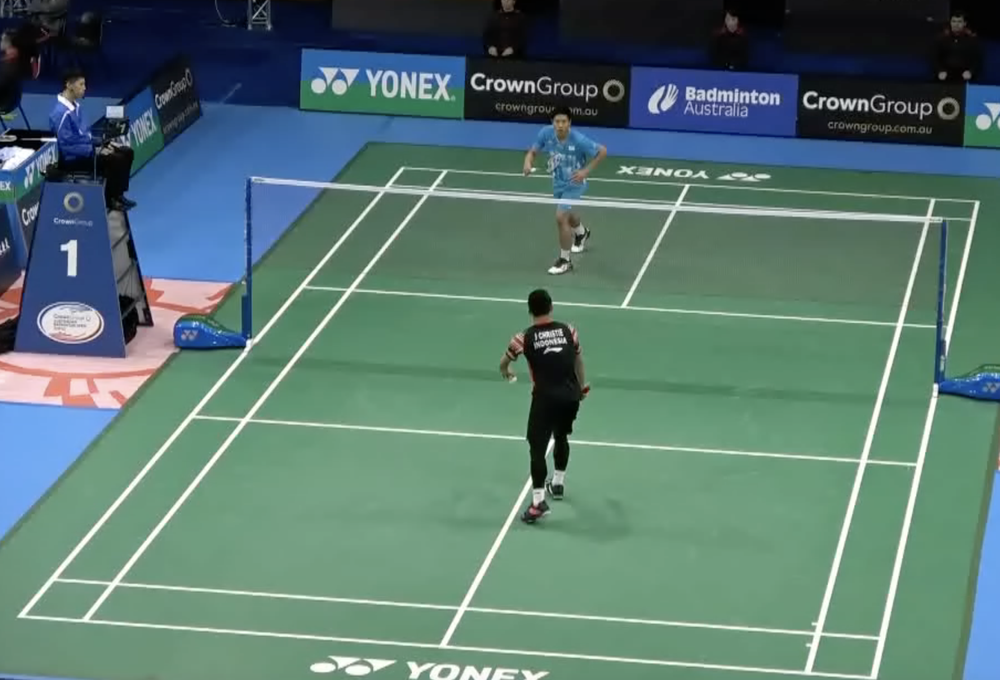
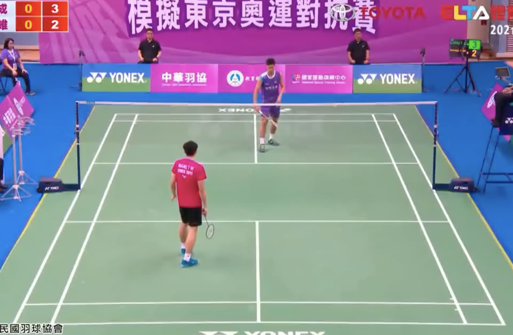
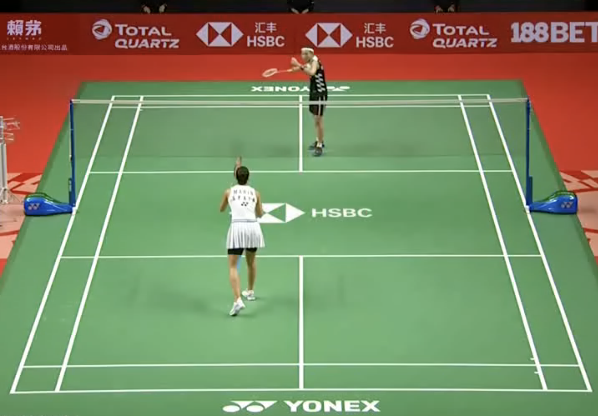
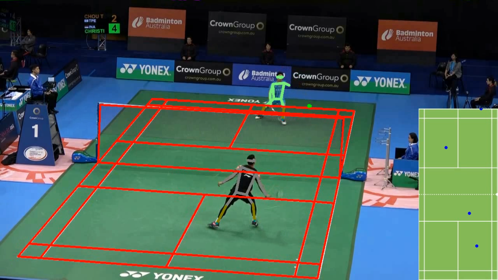
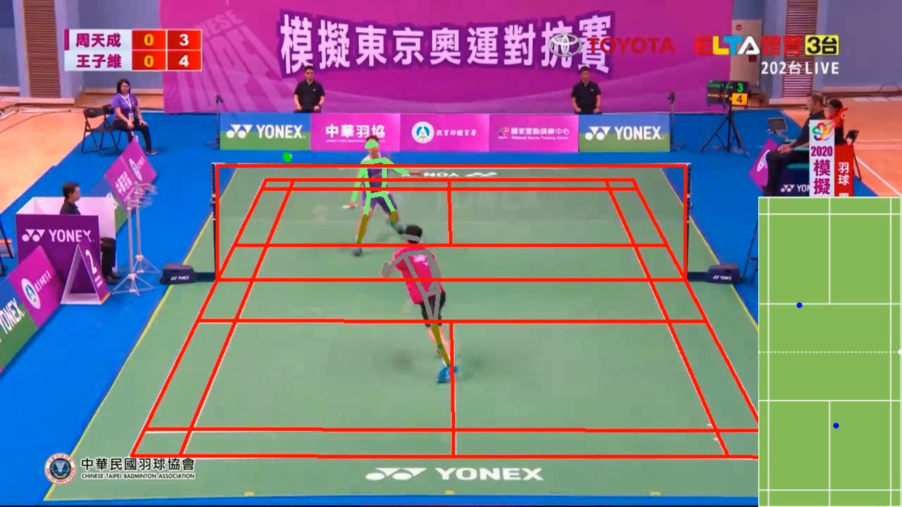
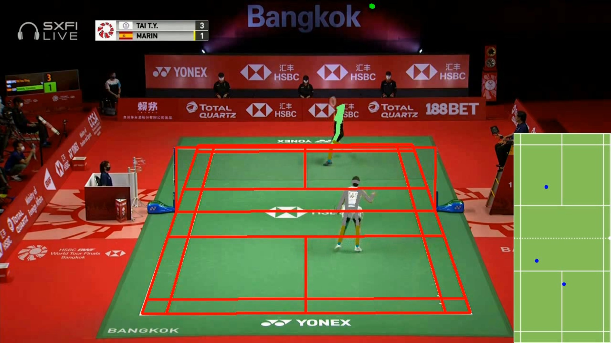
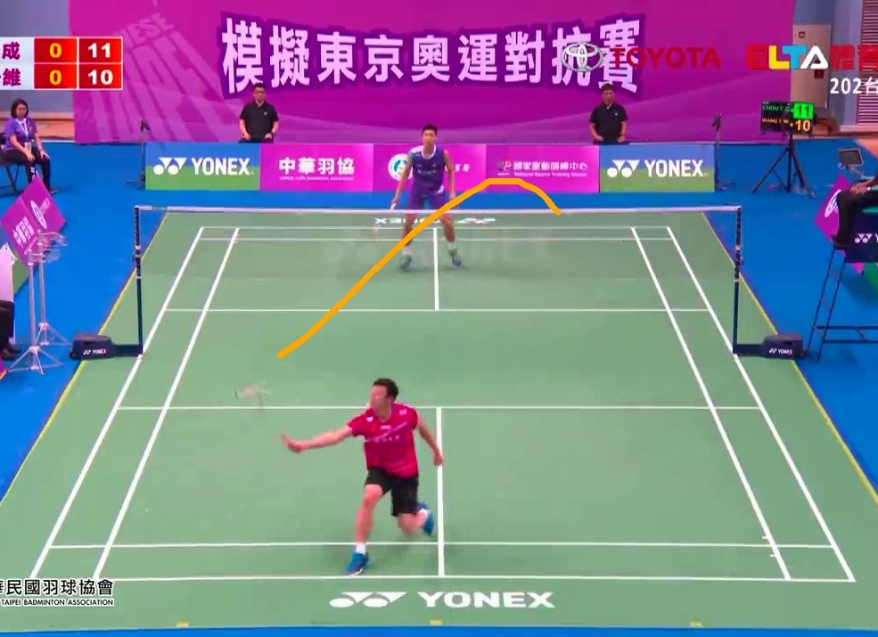
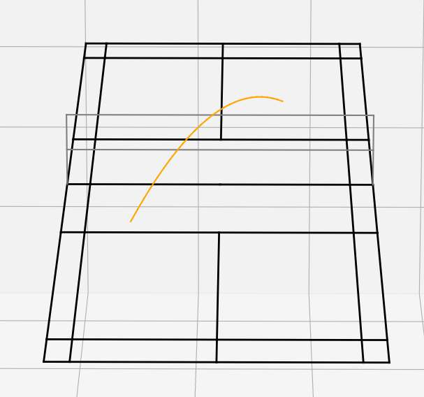
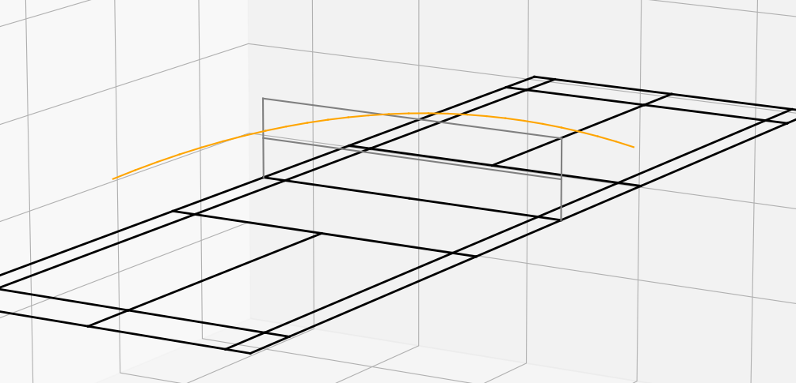
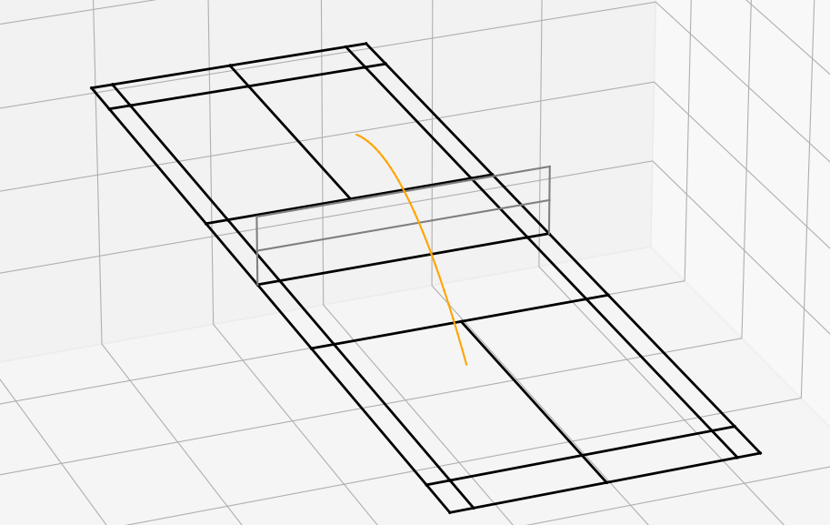
Figure 1 : Court, pose, and 3D shuttlecock trajectory automatically generated by our system.
图 1：我们的系统自动生成的球场、姿态和 3D 羽毛球轨迹。
Top : test matches used in our dataset.
顶部：我们的数据集中使用的测试匹配。
Middle : court, pose, and shuttlecock frame positions inferred by our system; Bottom : Reconstructed 3D trajectories displayed in novel camera angles.
中：我们的系统推断出的场地、姿态和羽毛球框架位置；底部：以新颖的摄像机角度显示的重建 3D 轨迹。
In a typical badminton game, spatial information such as where the player hits the shuttlecock and how the opponent responded, conveys important first order information about how the match has been progressing.
在典型的羽毛球比赛中，空间信息（例如球员击中羽毛球的位置以及对手如何反应）传达了有关比赛进展情况的重要一阶信息。
Moreover, as badminton players use various height-related tactics to adjust the rhythm of the game, this spatial information is especially valuable when presented in 3D.
此外，随着羽毛球运动员使用各种与身高相关的战术来调整比赛节奏，这种空间信息在以 3D 形式呈现时尤其有价值。
Previous academic work, as well as our informal conversation with top-level players, confirm that the use of 3D trajectories can aid in various ways such as tactics formulation and post-game analysis [ 5 , 35 ] .
之前的学术工作以及我们与顶级球员的非正式对话都证实，3D 轨迹的使用可以通过多种方式提供帮助，例如战术制定和赛后分析 [5, 35]。
However, recovering the 3D trajectories from monocular videos is difficult.
然而，从单目视频中恢复 3D 轨迹很困难。
First, in-the-wild badminton videos generally contain multiple points ( rallies in badminton terms), and each rally contains multiple shots .
首先，野外羽毛球视频一般包含多个点（羽毛球术语中的圆圈），每个圆圈包含多个击球。
Segmenting these shots out is an activity recognition problem, which can be challenging considering the extreme speed of the badminton shuttlecock.
将这些击球片段分割出来属于动作识别问题，而羽毛球极高的飞行速度使其颇具挑战。
[1] Even if we have the shots segmented, reconstructing the trajectory of a point (the shuttlecock) is still ill-defined due to the lack of stereo camera cues.
[1] 即使已经完成击球分段，由于缺乏立体相机提供的线索，重建一个点（羽毛球）的轨迹仍然是一个欠定问题。
If some reference 3D points are known, and ballistic trajectories can be assumed, then it is possible to reconstruct trajectories for each shot, such as the work done for tennis [ 36 ] and basketball [ 3 ] .
如果一些参考 3D 点已知，并且可以假设弹道轨迹，则可以重建每个击球的轨迹，例如网球 [36] 和篮球 [3] 所做的功。
However, unlike these sports, the badminton shuttlecock is heavily affected by air drag, and can easily get damaged within the course of a rally.
然而，与这些运动不同的是，羽毛球受空气阻力的影响很大，并且很容易在回合过程中损坏。
The shuttle is also not allowed to touch the ground during play, thus eliminating any useful physical information that can be inferred from the bounce of the shuttle.
在比赛过程中，羽毛球也不允许接触地面，从而消除了可以从羽毛球的弹跳推断出的任何有用的物理信息。
Other ball sports can additionally use the location of players’ feet to localize the ball.
其他球类运动还可以使用球员脚的位置来定位球。
However, the frequent jumping of badminton players, render many of these prior methods infeasible.
然而，羽毛球运动员频繁的跳跃使得这些现有方法中的许多方法变得不可行。
To make matters worse, even 2D shuttlecock tracking is highly non-trivial: badminton is predominantly an indoor sport, with a small court and extremely fast shuttlecock speed; the shuttlecock is tiny, can be occluded by the player, and can go out of the frame frequently.
更糟糕的是，即使是 2D 羽毛球追踪也非常重要：羽毛球主要是一项室内运动，场地较小，羽毛球速度极快；羽毛球很小，可能会被球员遮挡，并且经常会脱离画面。
Altogether, this results in limited success achieved in prior work.
总而言之，这导致之前的工作取得的成功有限。
For example, the method proposed by [ 24 , 25 ] requires human intervention for every shot.
例如，[24, 25]提出的方法每次击球都需要人工干预。
In contrast, our system requires no human intervention and can significantly outperform the model-based work by [ 19 ] .
相比之下，我们的系统不需要人工干预，并且可以显着优于基于模型的工作[19]。
Our contribution我们的贡献
Our work tackles the holistic problem of segmenting and reconstructing the trajectory of shots from unlabeled, monocular videos.
我们的工作解决了从未标记的单目视频中分割和重建击球轨迹的整体问题。
Our approach consists of a set of subsystems that analyzes a given video to identify the court, player poses, and per-frame shuttlecock pixel positions.
我们的方法由一组子系统组成，这些子系统分析给定的视频以识别球场、球员姿态和每帧羽毛球像素位置。
Using these signals, we train a recurrent network to obtain the segmentation of shots.
使用这些信号，我们训练一个循环网络来获得击球的分割。
Our network is compact, efficient to train, and results in high accuracy in detecting the shots (See Table 1 ).
我们的网络结构紧凑，训练高效，并且检测击球的准确性很高（参见表 1）。
We then propose a novel per-shot trajectory reconstruction method that leverages nonlinear optimization and domain knowledge when possible.
然后，我们提出了一种新颖的每击球轨迹重建方法，该方法尽可能利用非线性优化和领域知识。
We evaluate the 3D reconstruction method with a dataset containing real and synthetic trajectories and show state-of-the-art performance.
我们使用包含真实轨迹和合成轨迹的数据集评估 3D 重建方法，并展示了最先进的性能。
As a simplification, we limit the scope in this work to singles play, where only one player per side of the court is allowed.
为了简化起见，我们将这项工作的范围限制为单打比赛，即球场的每一侧只允许一名球员。
We hope that the statistics provided by this system can enable players to achieve greater levels of play through more efficient data-based tactical analysis.
我们希望该系统提供的统计数据能够使球员通过更高效的基于数据的战术分析来达到更高水平的发挥。
Figure 2 provides an overview of our system.
图 2 概述了我们的系统。
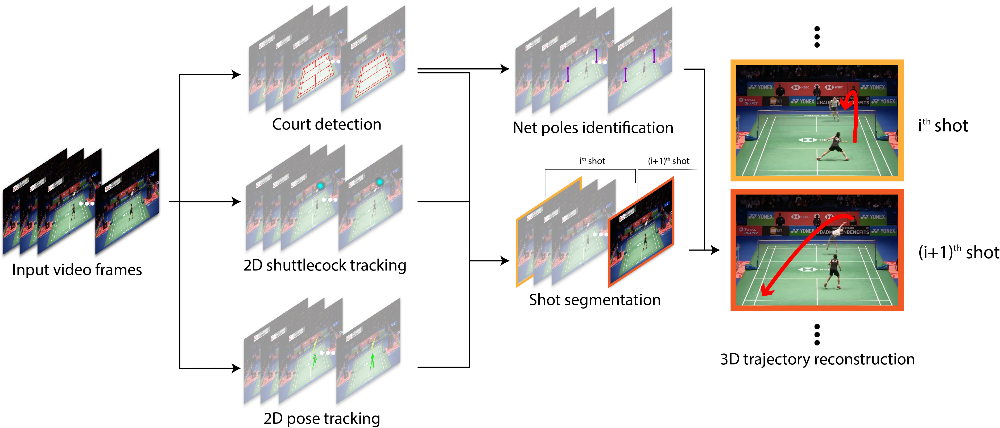
Figure 2 : Our method leverages detected court, shuttlecock track, and player poses to segment a sequence of video frames into shots , and reconstruct faithful 3D trajectory for each shot using a nonlinear optimizer.
图 2：我们的方法利用检测到的球场、羽毛球轨迹和球员姿态将视频帧序列分割成击球，并使用非线性优化器为每个击球重建忠实的 3D 轨迹。
2 Related Work2 相关工作
Prior work has generally focused on specific components such as court detection [ 17 , 34 , 11 , 33 , 31 , 14 ] , activity localization and classification [ 7 , 6 , 30 , 23 ] , stroke analysis [ 18 ] , pose analysis [ 15 ] , or ball tracking [ 16 , 26 , 22 , 29 ] .
先前的工作通常集中在特定的组件上，例如球场检测[17,34,11,33,31,14]，活动定位和分类[7,6,30,23]，击球分析[18]，姿态分析[15]或球跟踪[16,26,22,29]。
Our system, on the other hand, aim to generate and integrate different vision-based sub-signals including court, pose, shuttlecock positions to segment unlabeled videos into the known cyclic structure of point rallies [ 36 ] , and produce 3D trajectories of the shuttlecock that can, for example, be used in advance visualizations to improve tactics selection [ 5 , 35 ] .
另一方面，我们的系统旨在生成和集成不同的基于视觉的子信号，包括球场、姿态、羽毛球位置，以将未标记的视频分割成已知的点循环结构 [36]，并生成羽毛球的 3D 轨迹，例如，可以将其用于提前可视化以改进战术选择 [5, 35]。
Starting with some of these baseline sub-signal models, we have identified a number of key improvements to each model to boost the overall performance of our system, detailed in § 4 .
从其中一些基线子信号模型开始，我们已经确定了每个模型的许多关键改进，以提高我们系统的整体性能，详见第 4 节。
3D reconstruction is a widely studied topic in vision [ 27 ] , however, its use in sports videos is relatively recent.
3D 重建是视觉领域广泛研究的主题 [27]，然而，它在体育视频中的使用相对较新。
[ 24 , 25 ] showed a confirming point method that can reconstruct 3D shuttlecock positions but requires human intervention in placing the confirming points for every shot.
[ 24 , 25 ]展示了一种确认点方法，可以重建3D羽毛球位置，但需要人工干预来为每个击球放置确认点。
ShuttleSpace showed that 3D trajectories of badminton shots is useful for top-level players in an immersive analytics system [ 35 ] .
ShuttleSpace 表明，羽毛球击球的 3D 轨迹对于沉浸式分析系统中的顶级运动员非常有用 [35]。
TIVEE further confirmed that 3D trajectories conveys important tactical information and can be used to improve game planning and post-game analysis [ 5 ] .
TIVEE进一步证实3D轨迹传达了重要的战术信息，可用于改进比赛规划和赛后分析[5]。
Both ShuttleSpace and TIVEE were based on confirming points and thus requires human intervention at shot level to get accurate 3D trajectories.
ShuttleSpace 和 TIVEE 都基于确认点，因此需要击球级别的人工干预才能获得准确的 3D 轨迹。
Vid2Player showed that 3D trajectories of tennis ball can be used to substitute heavily motion-blurred broadcast footage to train a player behavioral model for synthesis [ 36 ] .
Vid2Player 表明，网球的 3D 轨迹可用于替代严重运动模糊的广播镜头，以训练运动员的合成行为模型 [36]。
[ 3 ] used 3D trajectories of basketball shooting to infer shooting location statistics.
[3]利用篮球投篮的3D轨迹来推断投篮位置统计。
Vid2Player used manually annotated shot boundaries, and [ 3 ] is based on shot boundary detection using histogram descriptors.
Vid2Player 使用手动标注的击球边界，并且 [3] 基于使用直方图描述符的击球边界检测。
Finally, [ 19 ] showed a model-based trajectory estimation method based on linear regression and SVM.
最后，[19]展示了一种基于线性回归和SVM的基于模型的轨迹估计方法。
However, their method is only evaluated on 2D synthetic shot trajectories.
然而，他们的方法仅在 2D 合成击球轨迹上进行评估。
To our knowledge, our work is the first end-to-end system that can provide shot segmentation and 3D shot trajectory estimation without human intervention .
据我们所知，我们的工作是第一个无需人工干预即可提供击球分割和 3D 击球轨迹估计的端到端系统。
3 Dataset3 数据集
Our dataset is based on the public TrackNetV2 dataset [ 26 , 16 ] .
我们的数据集基于公共 TrackNetV2 数据集 [26, 16]。
In total, this dataset contains 77k annotated frames from 26 unique singles matches from international play, filmed from an overhead, static, “broadcast-view” camera.
该数据集总共包含来自国际比赛中 26 场独特单打比赛的 77,000 个带标注的帧，由头顶静态“广播视图”摄像机拍摄。
Following the approach of TrackNet, we use the 12k frames from their three “test matches” for testing, and split the rest with 10% of the frames for validation and 90% for training.
遵循 TrackNet 的方法，我们使用三场“测试比赛”中的 12k 帧进行测试，并将其余帧分成 10% 进行验证，90% 进行训练。
The dataset also contains timestamp information of when either player stroke the shuttlecock (a hit ).
该数据集还包含任一球员击打羽毛球（击中）的时间戳信息。
We enhanced this dataset by labeling the four court corners for each match, and identify the player who hit the shuttlecock whenever hit is present.
我们通过标记每场比赛的四个球场角来增强此数据集，并在出现击球时识别击中羽毛球的球员。
Since the TrackNet dataset contains mostly “broadcast views” (where the camera is situated in the bleachers behind the court), we additionally labeled another 40 matches to test our court detection algorithm.
由于 TrackNet 数据集主要包含“广播视图”（摄像机位于球场后面的看台上），因此我们另外标记了另外 40 个比赛来测试我们的球场检测算法。
These additional matches were mined from YouTube and filmed from closer angles that were not present in the TrackNet data.
这些额外的比赛是从 YouTube 中挖掘的，并从 TrackNet 数据中不存在的更近的角度拍摄。
As described in Section 5 , we also prepare a synthetic dataset that contains 10k 3D trajectories simulated from a physical model.
如第 5 节所述，我们还准备了一个合成数据集，其中包含从物理模型模拟的 10k 3D 轨迹。
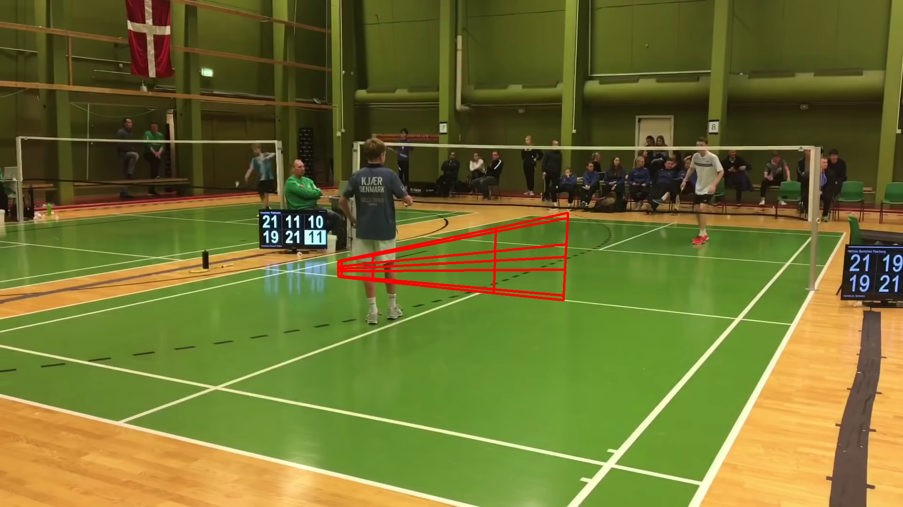
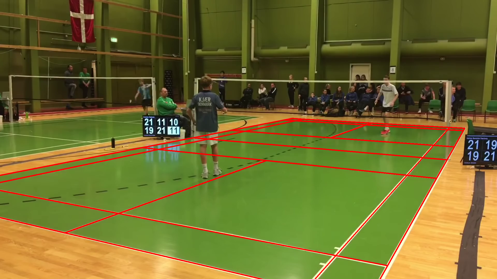
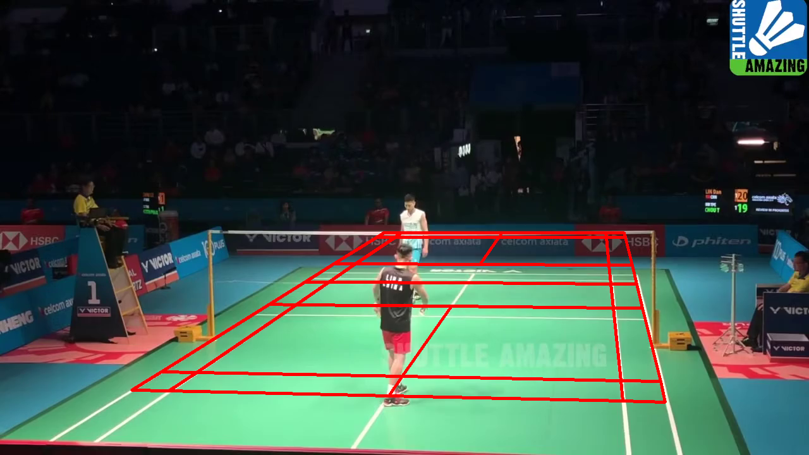
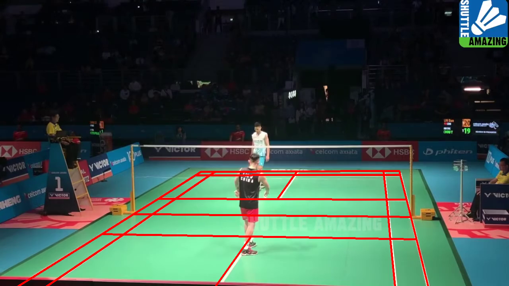
Figure 3 : Our court detection model is more robust than the baseline Farin et al . method [ 11 ] .
图 3：我们的球场检测模型比 Farin 等人的基线更加稳健。方法[11]。
Left : Courts detected with [ 11 ] .
左：球场通过[11] 进行检测。
Right : Courts detected with our model.
右：球场使用我们的模型检测到。
These two images are from additional annotated matches outside of the TrackNet dataset.
这两个图像来自 TrackNet 数据集之外的其他带标注的匹配。
4 Automated 3D trajectory reconstruction4 自动3D轨迹重建
In this section, we present each part of our system in detail.
在本节中，我们将详细介绍系统的每个部分。
For each part of the system, we review the existing state-of-the-art in the area, and discuss modification specific to our work where appropriate.
对于系统的每个部分，我们都会审查该领域现有的最先进技术，并在适当的情况下讨论针对我们工作的修改。
As previously described, our system currently only analyzes singles rallies recorded with a fixed camera from an approximate “broadcast view” (see Figure 1 for examples of this view).
如前所述，我们的系统目前仅从近似的“广播视图”分析使用固定摄像机记录的单次循环（有关此视图的示例，请参见图 1）。
4.1 Court detection4.1 球场检测
We base our approach for detecting the court on the model-based algorithm of Farin et al .
我们检测球场的方法基于 Farin 等人基于模型的算法。
[ 11 , 3 , 20 , 2 ] .
[11,3,20,2]。
Unfortuntately, we found that the original algorithm fails on many videos in our dataset where the viewing angle is off-center.
不幸的是，我们发现原始算法在数据集中的许多观看角度偏离中心的视频上失败。
We propose a graph-based approach to overcome this issue and significantly boost the performance of this algorithm.
我们提出了一种基于图的方法来克服这个问题并显着提高该算法的性能。
We briefly illustrate the original Farin’s algorithm [ 11 ] before introducing our modification.
在介绍我们的修改之前，我们简要说明了原始 Farin 算法 [11]。
Given an image of the court, candidate lines are first detected using pixel color thresholding followed by application of the Hough transform (see Figure 4 ).
给定球场图像，首先使用像素颜色阈值检测候选线，然后应用霍夫变换（见图 4）。
The detected lines are then split into a set of horizontal lines (those with slopes between -25 and 25 degrees) and of vertical lines (those with slopes between 60 and 120 degrees).
随后，将检测到的直线分为水平线集合 （倾角介于 -25° 与 25°）和竖直线集合 （倾角介于 60° 与 120°）。
Finally, a combinatorial search is conducted to match a known court layout to the candidate lines, with each search iteration picking two horizontal and two vertical lines for a reference rectangle in the known layout.
最后，进行组合搜索，将已知的球场布局与候选线相匹配，每次搜索迭代都会为已知布局中的参考矩形选取两条水平线和两条垂直线。
This results in a algorithm.
由此得到一个复杂度为 的算法。
Unfortunately, this algorithm fails in about 24% of videos in our dataset.
不幸的是，该算法在我们数据集中大约 24% 的视频中失败。
We found the main culprit to be the hard angle constraints set when partitioning results in line misclassification, which ultimately break the algorithm.
我们发现罪魁祸首是分区时设置的硬角度约束导致线错误分类，最终破坏了算法。
This happens most frequently when the angle of the camera is not ideal or when the reference rectangle of the court is not visible (see Figure 3 for examples).
当摄像机的角度不理想或球场的参考矩形不可见时，这种情况最常发生（示例见图 3）。
To avoid this issue, we propose a new partitioning algorithm that is free of hard-coded angle constraints.
为了避免这个问题，我们提出了一种不受硬编码角度约束的新分区算法。
To do this, we frame the problem as a maximum weight bipartite subgraph identification.
为此，我们将问题描述为最大权重二分子图识别。
We represent each line as a node in a complete graph, and for every pair of lines and , we connect the nodes with an edge of weight ( is set to be a small constant, e.g. ), where is the angle between lines and closest to .
我们将每条直线表示为完全图中的一个节点；对任意两条直线 和 ，在对应节点之间连接权重为 的边（ 设为一个小常数，例如 ），其中 是直线 与 所成角中最接近 的那个角。
Then we greedily try to partition the graph into two sets of vertices and such that the weight between the two sets is maximized.
随后，以贪心方式尝试将图划分为两个顶点集合 和 ，使两个集合之间的边权重之和最大。
This weight function encourages a partition where the lines in the two parts are roughly orthogonal to each other.
此权重函数鼓励进行划分，其中两个部分中的线大致彼此正交。
Our implementation is developed on top of the reference code provided by [ 4 ] .
我们的实现是在[4] 提供的参考代码的基础上开发的。
To assess the accuracy of the court detection, we measure two metrics over a manually annotated dataset: (i) the average pixel error over all detections, and (ii) the percentage of successful detections.
为了评估球场检测的准确性，我们在手动标注的数据集上测量两个指标：（i）所有检测的平均像素误差，以及（ii）成功检测的百分比。
We define a court detection as successful if the IoU of the detected court and ground truth is .
若检测球场与真值球场的交并比 IoU 满足 ，则认为球场检测成功。
On our dataset, our proposed approach increases the success rate of court detection from 73.9% to 85.5%, and decreased the average detection time by a factor of 40 while achieving an higher average IoU of 0.97 (vs. 0.96 from the original method).
在我们的数据集上，我们提出的方法将球场检测的成功率从 73.9% 提高到 85.5%，并将平均检测时间减少了 40 倍，同时实现了 0.97 的平均 IoU（相对于原始方法的 0.96）。
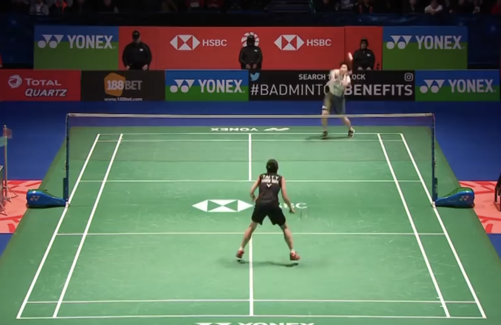
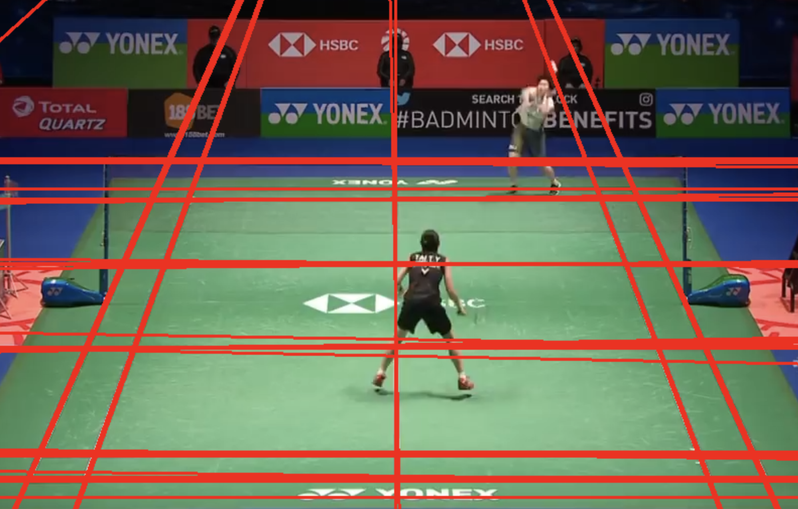
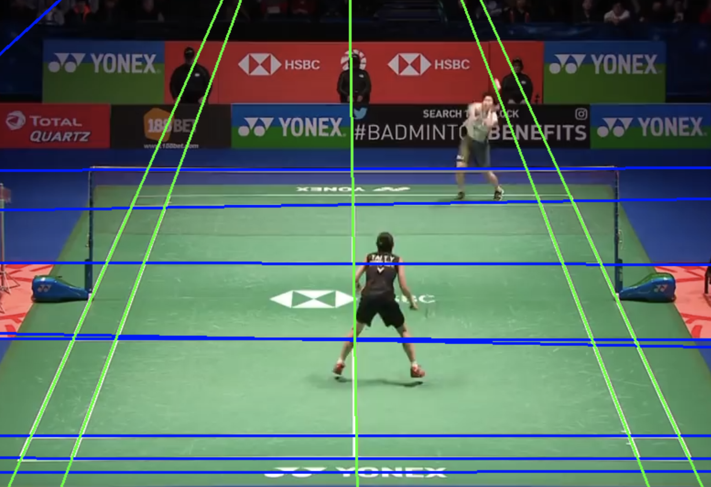
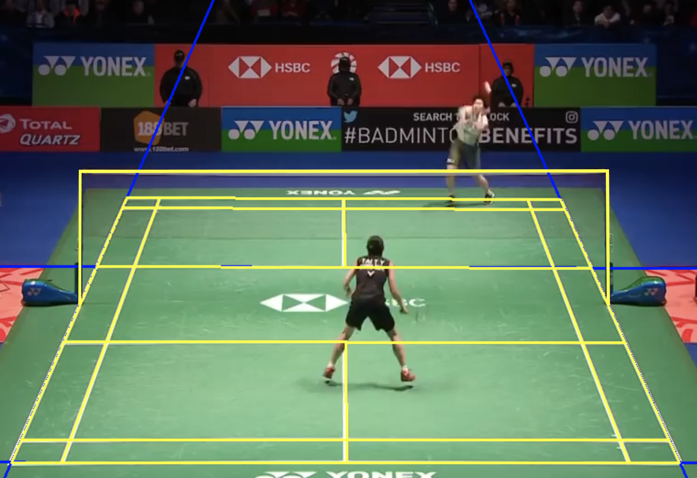
Figure 4 : Stages of our court detection includes applying pixel color thresholding (second) and a Hough transform to obtain line candidates (third), and then partitioning these lines (fourth) in order to efficiently search for the correct court layout (last).
图 4：我们的球场检测的阶段包括应用像素颜色阈值处理（第二个）和霍夫变换来获取候选线（第三个），然后对这些线进行分区（第四个），以便有效地搜索正确的球场布局（最后一个）。
4.2 Pose estimation4.2 人体姿态估计
We perform pose estimation using a top-down HRNet model [ 32 ] to compute per-frame poses through the mmpose framework [ 9 ] .
我们使用自上而下的 HRNet 模型 [32] 执行姿态估计，通过 mmpose 框架 [9] 计算每帧姿态。
To track poses, instead of using methods developed for unstructured environments [ 12 ] or recurrent network-based methods [ 21 ] , we simply leverage the detected court as a strong cue.
为了跟踪姿态，我们不使用为非结构化环境开发的方法[12]或基于循环网络的方法[21]，而是简单地利用检测到的球场作为强有力的线索。
We filter all detected poses that do not have feet in the court, and identify near and far players based on their distance to the camera.
我们过滤掉所有检测到的没有脚在球场上的姿态，并根据球员与摄像机的距离来识别近和远的球员。
This strategy is effective due to the fact that no one other than the players can step onto the court, and that players do not switch side during a point.
这一策略是有效的，因为除了球员之外，没有任何人可以上场，并且球员在某一分期间不会换边。
To accommodate jumping motions, which would misplace the player to a deeper position than they actually are, we make two modifications to increase robustness.
为了适应跳跃动作，这会将球员带到比实际位置更深的位置，我们进行了两项修改以提高鲁棒性。
Firstly, we relax the court boundary slightly.
首先，我们稍微放宽球场边界。
Secondly, if a side of the court has no pose within it, we find the pose closest to the last in-court pose recorded on that side.
其次，如果球场的一侧没有姿态，我们会找到最接近该侧记录的最后一个场内姿态的姿态。
For all of our videos, this simple approach identifies the two players on every frame.
对于我们所有的视频，这种简单的方法可以识别每一帧上的两个球员。
4.3 Shuttle detection4.3 羽毛球检测
Figure 5 : Architecture of our shuttle detection model is based on a modified U-net, where we added residual connections and use the weighted dice and binary cross-entropy loss.
图 5：我们的羽毛球检测模型的架构基于修改后的 U 网，其中我们添加了残差连接并使用加权骰子和二元交叉熵损失。
represents addition and represents concatenation.
表示相加， 表示拼接。
We formulate the shuttle detection problem as semantic segmentation and use a U-net style architecture ( Figure 5 ) inspired by TrackNetV2 [ 26 ] .
我们将羽毛球检测问题表述为语义分割，并使用受 TrackNetV2 [26] 启发的 U-net 风格架构（图 5）。
Similar to TrackNetV2, to encourage the network to learn the temporal context, we use a 3-in-3-out architecture that predicts the shuttle masks for three consecutive frames simultaneously (each resized to 288-by-512).
与 TrackNetV2 类似，为了鼓励网络学习时间上下文，我们使用 3-in-3-out 架构来同时预测三个连续帧的羽毛球掩码（每个帧的大小调整为 288 x 512）。
However, our model has significantly smaller footprint than the original TrackNetV2 (2.9M parameters in our model versus 11.3M parameters), making it faster to train and perform inference, and higher accuracy ( accuracy from in the original).
不过，相比原始 TrackNetV2，我们的模型规模明显更小（参数量为 290 万，而原模型为 1130 万），因此训练和推理更快，准确率也更高（由原来的 提高到 ）。
This improvement is credited to two main changes we introduced.
这一改进归功于我们引入的两项主要更改。
First, we added residual connections to each convolutional layers (see Figure 5 ).
首先，我们向每个卷积层添加残差连接（见图 5）。
Second, instead of a binary focal loss, we use a weighted combination of the dice loss and the binary cross-entropy to mitigate the input imbalance problem of tiny shuttlecock, inspired by [ 28 ] .
其次，受[28]的启发，我们使用骰子损失和二元交叉熵的加权组合来代替二元焦点损失，以减轻微小羽毛球的输入不平衡问题。
Given per-pixel prediction and ground truth label , the loss we use is
给定逐像素预测 与真值标签 ，所使用的损失 为：
where is the blending coefficient, and is a small constant for numerical stability.
其中 为混合系数， 为保证数值稳定性而设置的小常数。
Throughout our experiments, we use and .
所有实验均采用 和 。
To generate the final shuttlecock location, we threshold at to produce a binary mask per frame, and then use the centroid of the largest connected component in the mask.
为获得最终羽毛球位置，我们以 为阈值对 进行二值化，得到每帧的掩膜，再取掩膜中最大连通分量的质心。
If no pixels are above or the area of the component is not large enough, we report the shuttle is undetected.
若没有像素值超过 ，或连通分量面积不足，则报告未检测到羽毛球。
To improve training, we trained the first few epochs of our network with distillation learning [ 13 ] using parameters from TrackNetV2.
为了改进训练，我们使用来自 TrackNetV2 的参数通过蒸馏学习 [13] 训练了网络的前几个时期。
In total we used 10 distillation epochs and 40 training epochs with an Adadelta optimizer.
我们总共使用了 10 个蒸馏时期和 40 个训练时期以及 Adadelta 优化器。
Standard augmentation such as random rotations, shears, and zooms were applied.
应用了标准增强，例如随机旋转、剪切和缩放。
4.4 Shot segmentation4.4 击球分割
Figure 6 : Architecture of our hit detection model is based on a simple GRU-based recurrent network that consumes court, pose, and 2D shuttlecock information to make hit predictions.
图 6：我们的击球检测模型的架构基于一个简单的基于 GRU 的循环网络，该网络使用球场、姿态和 2D 羽毛球信息来进行击球预测。
Identifying the shots of a rally is critical for reconstructing 3D trajectories (§ 4.5 ) and other downstream applications.
识别圆形的击球对于重建 3D 轨迹（第 4.5 节）和其他下游应用至关重要。
A shot happens when a player hits the shuttle with her racket, and ends right before the opposing player hits the shuttle or if the shuttle hits the court.
当一名球员用球拍击中羽毛球时，击球就会发生，并在对方球员击中羽毛球之前或如果羽毛球击中球场时结束。
Therefore, in order the segment the video into successive shots, it is equivalent to identify the hit events.
因此，将视频分割成连续的击球，就相当于识别出击球事件。
We formulate the hit detection as a multi-class classification problem.
我们将击球检测表述为多类分类问题。
Since we are focusing on singles matches only, this is a three way classification with labels no hit , near player hit , and far player hit predicted at each frame.
由于我们只关注单打比赛，因此这是一个三向分类，每帧预测标签为“无命中”、“近球员命中”和“远球员命中”。
HitNet: Hit detection architectureHitNet：击球检测架构
In all racket sports, hits at certain parts of the court (e.g. the side lines) occurs more often than the others.
在所有球拍运动中，球场某些部位（例如边线）的击球比其他部位更常见。
Moreover, due to the need to efficiently translate power to the ball, athletes have very consistent poses when hitting, and have to perfect their positioning with respect to the ball.
此外，由于需要有效地将力量传递给球，运动员击球时的姿态非常一致，并且必须完善他们相对于球的位置。
The higher the level of the athlete, the higher this consistency.
运动员的水平越高，这种一致性就越高。
As a result, we hypothesize that the court layout, the poses, and the shuttlecock location play an important role in identifying hits.
因此，我们假设球场布局、姿态和羽毛球位置在识别击球方面发挥着重要作用。
We propose a recurrent model that leverages the previously computed court layout (§ 4.1 ), poses (§ 4.2 ), and shuttlecock positions (§ 4.3 ) and their temporal tracks to predict hits.
我们提出了一个循环模型，利用先前计算的球场布局（第 4.1 节）、姿态（第 4.2 节）和羽毛球位置（第 4.3 节）及其时间轨迹来预测击球。
For each frame of the video, we create a feature vector comprising of the pixel coordinates of the court corners, the two players’ poses, and the location of the shuttle, and normalize them jointly in the and directions.
对于视频的每一帧，我们创建一个由球场角点的像素坐标、两名球员的姿态和羽毛球位置组成的特征向量，并在和方向上对它们进行联合归一化。
The features are embedded into 32 dimensions using a fully-connected layer, before feeding into the recurrent unit.
在输入循环单元之前，使用全连接层将特征嵌入到 32 个维度中。
The recurrent unit comprises of two GRU layers that takes 12 frames at a time, and predict whether a hit occurred between frame 7 to 12.
循环单元由两个 GRU 层组成，一次获取 12 帧，并预测第 7 帧到第 12 帧之间是否发生命中。
We then feed the last token embedding of this recurrent unit into a small fully connected layer before passing it to the softmax layer to generate confidence scores.
然后，我们将这个循环单元的最后一个标记嵌入输入到一个小的全连接层中，然后将其传递到 softmax 层以生成置信度分数。
The architecture is shown in Figure 6 .
其架构如图6所示。
The network is compact in size (around 16K parameters) and can reach accuracy.
该网络规模紧凑（大约16K个参数）并且可以达到的精度。
The network can performance inference over several thousand frames a second.
该网络每秒可以进行数千帧的推理。
To show that each feature (court, pose, shuttle) contributes significantly to the output accuracy, we perform ablation studies in Table 1 .
为了表明每个特征（球场、姿态、羽毛球）对输出精度有显着贡献，我们在表 1 中进行了消融研究。
The training is done on our dataset with standard data augmentation.
训练是通过标准数据增强在我们的数据集上完成的。
Artificial noise is also added in the pixel coordinates 5% of the time to simulate noise in the pipeline.
像素坐标中还会有5%的时间添加人工噪声，以模拟流程中的噪声。
Cross-entropy is used as the loss function with the Adam optimizer.
Adam 优化器使用交叉熵作为损失函数。
Learning rate is set at a constant .
学习率设置为常数。
For the input normalization, we scale all -pixel coordinates and -pixel coordinates of the feature (court, pose, and shuttlecock) to the interval , and set undetected shuttle and pose coordinates to .
对于输入归一化，我们将特征（球场、姿态和羽毛球）的所有像素坐标和像素坐标缩放到区间，并将未检测到的羽毛球和姿态坐标设置为。
All features were normalized together to ensure that the spatial relationship is preserved.
所有特征都一起标准化，以确保保留空间关系。
Finally, due to the class-imbalance between hit and no-hit events, we rebalance the dataset to ensure an equal number of each type of event were used in the dataset.
最后，由于命中事件和非命中事件之间的类不平衡，我们重新平衡数据集，以确保数据集中使用相同数量的每种类型的事件。
Constrained optimization of the network output网络输出的约束优化
Next, we incorporate badminton domain knowledge to further optimize the HitNet output.
接下来，我们结合羽毛球领域知识来进一步优化 HitNet 输出。
The optimization is based on imposing several constraints.
优化基于施加多个约束。
In particular,
特别是，
- I.
We know the approximate number of hits for a given rally.
我们知道给定循环的大致点击次数。
Based on typical shuttle speeds and the court size, the average time between hits is around 1 second, implying that a rally lasting seconds has approximately hits.
根据典型的羽毛球速度和场地大小，击球之间的平均时间约为 1 秒，这意味着持续秒的圆圈大约有击球。
- II.
No two hits can be too close in time.
两次命中的时间不能太接近。
Empirically, we found half a second to be a good threshold.
根据经验，我们发现半秒是一个很好的阈值。
In the TrackNetV2 dataset, no two hits are within 0.5s of each other.
在 TrackNetV2 数据集中，没有两个命中的时间间隔在 0.5 秒以内。
- III.
Hits must be alternating between opposing players, hence no two adjacent hits should be classified to the same player.
击球必须在对方球员之间交替进行，因此相邻的两次击球不应归为同一球员。
Our optimization aims to find a set of hits roughly maximizing the sum of confidence scores subject to these constraints.
我们的优化旨在找到一组大致最大化受这些约束影响的置信分数总和的命中。
More formally, given frames and a set of per-frame confidence scores , our goal is to associate each frame with a label indicating no hit, or a hit by one of the players.
更正式地说，给定帧和一组每帧置信度分数，我们的目标是将每个帧与一个标签相关联，指示没有击中，或者其中一个球员击中。
Since the three scenarios are mutually exclusive, it suffices to label all the frames on which hits occur (the rest will be labeled as no hits).
由于这三种情况是互斥的，因此只需标记发生命中的所有帧（其余帧将标记为未命中）。
Let denote the frame indices where a hit has occurred, with total hits.
让表示发生命中的帧索引，总命中数为。
Suppose the total duration of the video is seconds (implying hits on average), and the video is at fps.
假设视频的总时长为秒（意味着平均点击次数），视频的帧率为帧。
We seek to maximize the following objective:
我们力求最大限度地实现以下目标：
| s.t. | |||
where is a parameter that encourages the algorithm to use fewer than hits if possible.
其中是一个参数，鼓励算法在可能的情况下使用少于的命中。
Without , the algorithm will always use exactly hits as none of the confidence scores are negative.
如果没有，算法将始终准确地使用命中，因为没有一个置信度分数为负数。
In practice, we set to be the mean of across all the frames.
在实践中，我们将设置为所有帧中的平均值。
The first two inequalities enforces constraint I and II, and the third enforces the shuttle to be hit by alternating players.
前两个不等式强制执行约束 I 和 II，第三个不等式强制由交替的球员击打羽毛球。
The global optimum of the objective above can be found by standard dynamic programming running in time.
上述目标的全局最优可以通过在时间内运行的标准动态规划找到。
In Table 1 we compare our model against a naive baseline that simply detects a hit when the second derivative of either the shuttle -coordinate or -coordinate exceeds a predefined threshold (tuned for maximum accuracy).
在表 1 中，我们将我们的模型与朴素基线进行比较，该基线仅在羽毛球坐标或坐标的二阶导数超过预定义阈值（调整为最大精度）时检测击中。
The locations of large second derivative indicate “discontinuities” in the velocity that occur when a shuttle is struck.
大二阶导数的位置表明击打羽毛球时发生的速度“不连续”。
To measure the effectiveness of our constrained optimization, we further compare against a naive post-processing which simply classifies using the largest confidence score while ensuring that no two hits are within 0.5 seconds of each other.
为了衡量我们的约束优化的有效性，我们进一步与简单的后处理进行比较，后者简单地使用最大置信度分数进行分类，同时确保没有两个命中彼此相隔在 0.5 秒内。
If two frames are classified as hits and are within 0.5 seconds of each other, the earlier one is classified as a hit and the later one is classified as a no hit.
如果两帧被分类为命中并且彼此相差在 0.5 秒内，则较早的一帧被分类为命中，而较晚的一帧被分类为未命中。
To measure the accuracy, recall, and precision of the models, we only look at frames where hits occurred.
为了测量模型的准确性、召回率和精确度，我们只查看发生命中的帧。
If we were to include all frames, then a trivial detector outputting no hit for all frames would get close to 100% accuracy.
如果我们要包含所有帧，那么对所有帧均不输出命中的普通检测器将获得接近 100% 的准确度。
To be precise, suppose the ground truth has hit-player pairs indicating that player hit the shutte on frame , and the model predicts .
准确地说，假设真值具有命中球员对，表明球员在帧上按下了快门，并且模型预测。
The metrics we use are:
我们使用的指标是：
As Table 1 shows, our model offers a substantial ( ) accuracy improvement of the hit detection over the naive model.
如表 1 所示，与朴素模型相比，我们的模型在击球检测方面提供了显着的 () 准确度改进。
Table 1 : Comparison of HitNet over baselines and ablation study shows that HitNet benefits from all input features with the optimization-based postprocessing.
表 1：HitNet 与基线和消融研究的比较表明，HitNet 受益于基于优化的后处理的所有输入特征。
Derivative-based method attempts to detect hits by thresholding on trajectory derivatives, and RF is a random forest-based classifier.
基于导数的方法尝试通过轨迹导数的阈值来检测命中，RF 是基于随机森林的分类器。
HitNet is our model.
HitNet 是我们的模型。
| recall回忆 | acc.附件 | prec.保护区 | f1 | |
| Derivative-based基于衍生品 | 65.7% | 53.8% | 74.7% | 0.699 |
| RF | 65.1% | 57.4% | 83.0% | 0.730 |
| HitNet (Shuttle)HitNet (共享球) | 70.2% | 68.8% | 97.4% | 0.815 |
| HitNet (Shuttle+Pose)HitNet (共享球+Pose) | 73.9% | 75.6% | 97.1% | 0.850 |
| HitNet (All)HitNet(全部) | 78.1% | 76.4% | 97.2% | 0.866 |
| HitNet+optimizationHitNet+优化 | 94.3% | 89.7% | 94.9% | 0.946 |
4.5 3D Reconstruction4.5 3D重建
With the shots segmented (§ 4.4 ), we can now independently reconstruct trajectories for each shot.
完成击球分段（第 4.4 节）后，即可独立重建每一拍的轨迹。
We pose this as a constrained nonlinear optimization problem.
我们将其表述为一个带约束的非线性优化问题。
Physics-based trajectory estimation基于物理的轨迹估计
The ability to reconstruct shot-by-shot offers great advantage because without the discontinuous forces applied to the shuttle, the 3D trajectory, , can simply be approximated [2] by a particle under drag [ 8 ] :
逐拍重建具有明显优势：排除击球施加的非连续外力后，三维轨迹 可以近似为受到阻力的质点运动 [2][8]：
| (1) | ||||
| subject to | (2) |
with initial position , velocity , and the drag coefficients .
其中初始位置为 ，初始速度为 ，阻力系数为 。
is a constant representing the gravitational acceleration.
是表示重力加速度的常数。
Given , , and , we can integrate this differential equation to get .
给定 、 和 ，对该微分方程积分即可得到 。
Note can change from shot to shot, as the shuttlecock feathers slowly break over the course of a rally.
注意，羽毛可能在一个回合中逐渐损坏，因此 可以随每一拍而变化。
Estimating the initial conditions估计初始条件
The problem for the above equation is of course that the initial conditions are unknown.
上述方程面临的问题是初始条件未知。
However, note that given 3D trajectory estimates and camera parameters, we can project to image space to obtain 2D trajectory estimates using the Direct Linear Transform [ 1 ] .
不过，给定三维轨迹估计和相机参数，就能通过直接线性变换 [1] 将 投影到图像空间，得到二维轨迹估计 。
This requires known 3D coordinates, which we have via the boundary court corners detected in § 4.1 plus the tip points on the net poles [3] .
该过程需要 个已知三维坐标：它们来自第 4.1 节检测出的 个球场边界角点，以及 个网柱顶点 [3]。
Given the camera parameters, we can measure how good a given 3D trajectory is by measuring the reprojection error:
给定相机参数，可以通过重投影误差衡量某条三维轨迹的拟合程度：
| (3) |
where is the tracked 2D coordinates of the shuttlecock we introduced in § 4.3 .
其中 是第 4.3 节得到的羽毛球二维跟踪坐标。
This problem can then be solved with a non-linear regression optimizer until we find a good set of initial conditions.
随后，使用非线性回归优化器求解，寻找一组合适的初始条件。
3D trajectory reconstruction algorithm3D轨迹重建算法
The vanilla version of our reconstruction algorithm is therefore built on solving Equation 2 , and refining the initial conditions by reprojecting the solution back to image space using Equation 3 .
因此，重建算法的基础版本先求解式 (2)，再利用式 (3) 将解重投影到图像空间，以此改进初始条件。
The reconstruction can be greatly improved by incorporating additional priors.
引入额外先验可以显著改善重建。
We can provide priors on the start and end positions of the shot through the players’ poses.
球员姿态能够提供一拍起点与终点位置的先验。
We can also penalize the unlikely event that the shot goes out by extending the trajectory of the shuttle until it hits the ground.
此外，将球路延伸至落地，就可以对不太可能出现的出界轨迹施加惩罚。
[4] The final loss we use is
[4] 最终采用的损失为：
| (4) |
where and are the 3D position estimates of the hitting and receiving players.
其中 与 分别为击球方与接球方的三维位置估计。
These are estimated using their feet position at the time of hit and receive, respectively, with a vertical height estimation of .
分别使用击球和接球时的脚部位置，并将垂直高度估计为 ，来构造这两个位置。
is the distance out of the court if we extend the trajectory of the shuttle until it hits the ground.
表示将球路延伸至落地时，落点超出球场边界的距离。
If the shuttle lands inside the court, .
若落点在场内，则 。
We found the use of is quite important, as it helpfully rules out the cases where the shuttlecock shoots out the back or side of the court in a way that cannot be penalized by the reprojection loss.
非常重要：它可以排除越过底线或边线飞出的某些轨迹，而重投影损失无法对这类情况施加有效惩罚。
is used to adjust the closeness of the reprojection to the initial and final coordinate guesses.
用于调节重投影拟合与起终点坐标先验之间的权衡。
In practice, we use , where is the camera projection matrix.
实践中采用 ，其中 为相机投影矩阵。
This choice of allows us to compensate for the fact that is measured in image coordinates, while the other three terms in Equation 4 are measured in 3D world coordinates.
采用这一 ，是为了补偿量纲差异： 在图像坐标中度量，而式 (4) 的其他三项在三维世界坐标中度量。
This optimization is solved with some domain-specific constraints:
求解优化时还加入以下运动领域约束：
- •
The initial and final 3D shuttle coordinates should have height less than 3 metres, i.e., .
羽毛球起点和终点的三维高度均应小于 3 米，即 。
- •
The initial velocity of the shuttle is less than 426 kph, or roughly 120 m/s, i.e., .
羽毛球初速小于 426 km/h，约为 120 m/s，即 。
- •
The initial coordinates of the shuttle is on the same side as the player that hit it.
羽毛球的初始位置应与击球球员位于球网同侧。
Since the court is 13.4 metres long, this constraint implies that , if the closer player hit the shuttle, and if the farther player hit the shuttle.
球场长 13.4 米，因此这一约束意味着 ；若近端球员击球，则 ；若远端球员击球，则 。
- •
The initial velocity is towards the opposing player, i.e. .
初始速度方向应朝向对方球员，即 。
5 Experiments5 实验
We have already shown several benchmark comparisons and ablation studies for the court detection, shuttlecock tracking, and shot segmentation ( Table 1 ) in previous sections.
我们已经在前面的章节中展示了球场检测、羽毛球跟踪和击球分割的几个基准比较和消融研究（表 1）。
In this section, we focus on experiments around 3D trajectory reconstruction and discuss several factors affecting its accuracy.
在本节中，我们重点关注 3D 轨迹重建的实验，并讨论影响其准确性的几个因素。
Synthetic trajectory dataset合成轨迹数据集
On top of the dataset introduced in § 3 , we create an additional evaluation dataset containing 10k synthetic trajectories to obtain ground truth 3D positions.
在第 3 节中介绍的数据集之上，我们创建了一个包含 10k 合成轨迹的附加评估数据集，以获得真值 3D 位置。
We do this by randomly sample the initial conditions and start position, and reject samples that fail to reach over the net or land on the opposite court.
我们通过对初始条件和起始位置进行随机采样来做到这一点，并拒绝未能过网或落在对方球场上的样本。
With the initial conditions, we can solve Equation 2 to obtain the trajectories.
有了初始条件，我们就可以解方程2来获得轨迹。
Vertical height up to and speed up to is used.
使用最高可达的垂直高度和最高可达的速度。
To ensure even coverage in the simulated trajectories, we simulated trajectories with initial heights up to 2.5 metres, divided the metre quarter court into cm cells, and generated a trajectory from each cell.
为了保证模拟轨迹的均匀覆盖，我们模拟了初始高度高达2.5米的轨迹，将米四分之一球场划分为厘米单元格，并从每个单元格生成轨迹。
The remaining quarters are symmetric and do not need to be simulated.
其余四分之一是对称的，不需要模拟。
Our synthetic dataset allows us to measure both the reconstruction error (distance between the true 3D trajectory and the reconstructed one) as well as the reprojection error (pixel distance between true trajectory and the reconstructed one when projected to 2D).
我们的合成数据集使我们能够测量重建误差（真实 3D 轨迹与重建轨迹之间的距离）以及重投影误差（投影到 2D 时真实轨迹与重建轨迹之间的像素距离）。
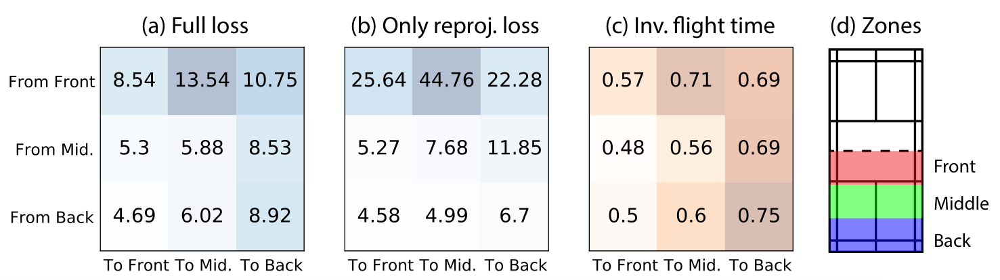
Figure 7 : Measured reconstruction error (in cm) on 10k synthetic trajectories shows that shots leaving from the front cause larger errors.
图 7：在 10k 条合成轨迹上测量的重建误差（以厘米为单位）表明，从前面离开的球会导致更大的误差。
(a) is based on optimizing our full loss Equation 4 , where (b) is based on optimizing only the reprojection loss Equation 3 .
(a) 基于优化我们的全部损失方程 4 ，其中 (b) 基于仅优化重投影损失方程 3 。
(c) shows the inverse flight time of the shuttle for each zone, and (d) shows the standard badminton court and the zone assignment, where we have divided the half-court into front, middle, and back zones covering one-third each.
(c)显示了羽毛球在每个区域的逆飞行时间，(d)显示了标准羽毛球场和区域分配，其中我们将半场分为前、中、后三个区域，各占三分之一。
Reconstruction accuracy on synthetic data合成数据的重建精度
We first evaluate our reconstruction algorithm on the simulated trajectories.
我们首先在模拟轨迹上评估我们的重建算法。
Using camera projection matrices from the three test matches, we project the 3D coordinates onto the image space and reconstruct it back using our algorithm.
使用来自三场测试比赛的相机投影矩阵，我们将 3D 坐标投影到图像空间上，并使用我们的算法将其重建回来。
To mimic uncertainty that might occur in the pipeline affecting the estimated impact location, we add uniformly distributed random noise between and onto the hit positions, and .
为了模拟流程中可能出现的影响估计撞击位置的不确定性，我们将和之间均匀分布的随机噪声添加到命中位置和上。
In Figure 7 , we show the accuracy of our reconstruction on this synthetic dataset.
在图 7 中，我们展示了在此合成数据集上重建的准确性。
We bundle trajectories that start and end in different zones to illustrate the effect camera perspective and travel distance might have on the error (further discussion on this in later sections).
我们将在不同区域开始和结束的轨迹捆绑在一起，以说明相机视角和行进距离可能对误差产生的影响（在后面的部分中对此进行进一步讨论）。
On average, adding the priors improves the error from to .
平均而言，添加先验可以将误差从提高到。
The 2D reprojection error are not shown as they are consistently less than pixel for all zones, showing our algorithm is working well to minimize the reprojection error.
未显示 2D 重投影误差，因为它们始终小于所有区域的像素，这表明我们的算法运行良好，可以最大限度地减少重投影误差。
Reconstruction accuracy on real data真实数据的重建精度
We use the dataset introduced in § 3 that contains real-world matches to study the reconstruction accuracy.
我们使用第 3 节中介绍的包含现实世界匹配的数据集来研究重建精度。
Note that in this dataset, 3D ground truth positions are not available and thus only 2D reprojection error can be computed.
请注意，在此数据集中，3D 真值位置不可用，因此只能计算 2D 重投影误差。
To tease out effects of different parts of the pipeline, we perform two versions of the study: one where we use ground truth shuttle tracking and hits, and the other where all features were estimated with the system.
为了梳理流程不同部分的影响，我们进行了两个版本的研究：一个版本使用真值羽毛球跟踪和命中，另一个版本使用系统估计所有功能。
The result is shown in Table 2 .
结果如表2所示。
As expected, the estimated shuttle tracking and hits do contain errors, and thus the end-to-end reconstruction contains up to four times the error in pixel counts.
正如预期的那样，估计的羽毛球跟踪和命中确实包含错误，因此端到端重建包含高达四倍的像素计数错误。
The highest error is pixels, or about given the image resolution we are working with.
最高误差为像素，或者根据我们正在使用的图像分辨率约为。
For the measurement, we exclude the first and last shot of a rally to account for the often occluded first shot (serve), and the last shot (ground impact) as they are not annotated.
对于测量，我们排除了圆圈的第一个和最后一个击球，以考虑经常被遮挡的第一个击球（发球）和最后一个击球（地面撞击），因为它们没有标注。
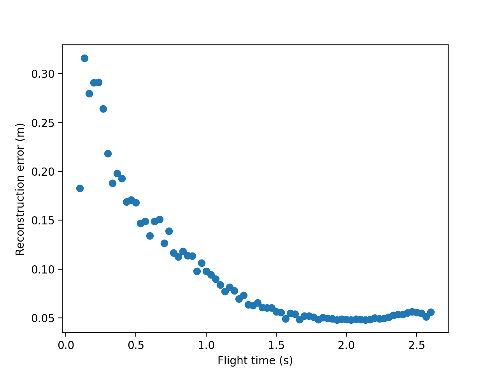
Figure 8 : Reconstruction error with respect to shuttlecock flight time shows that longer flight time leads to drastically lower error until saturated at around .
图 8：相对于羽毛球飞行时间的重建误差表明，较长的飞行时间会导致误差大幅降低，直到在左右饱和。
Error attribution错误归因
Inspection of the performance on both synthetic and real data reveals several observations regarding the reconstruction error: 1) the error tends to be higher when a shot is leaving from the front court, and demonstrates certain zone specific behaviors; 2) misclassification of a hit (either false positive or false negative) has a rippling impact on the reconstruction; 3) certain limitations of the aerodynamic model in simulating the true trajectory.
对合成数据和真实数据性能的检查揭示了有关重建误差的几个观察结果：1）当击球从前场离开时，误差往往会更高，并表现出某些区域特定的行为； 2）命中的错误分类（假阳性或假阴性）对重建产生连锁反应； 3）气动模型在模拟真实轨迹方面存在一定的局限性。
As shown in Figure 7 , the reconstruction errors are always higher when the shots are leaving from the front court.
如图7所示，当球从前场离开时，重建误差总是较高。
In Figure 8 , we show that the error is highly correlated with the shuttlecock flight time.
在图 8 中，我们表明误差与羽毛球飞行时间高度相关。
This is because longer trajectories naturally correspond to more on-screen observations, which in turn constrain the optimizer to find a more accurate initial conditions.
这是因为较长的轨迹自然对应于更多的屏幕观察，这反过来又限制优化器找到更准确的初始条件。
Similarly, the inverse flight time shown in Figure 7 shows good agreement with this observation.
同样，图 7 中显示的逆飞行时间与这一观察结果非常吻合。
We also note that when shuttlecock flies so high that it becomes off-screen, typically in a to-the-back shot, the number of observations are reduced, too.
我们还注意到，当羽毛球飞得太高以至于超出屏幕时（通常是从背面击球），观察次数也会减少。
This helps explain why shots going to the back court also results in higher error.
这有助于解释为什么击球到后场也会导致更高的失误。
We have briefly discussed the observation in Table 2 that the end-to-end reconstruction contains much higher errors than the reconstruction bootstraped by the ground truth shuttle and hit labels.
我们已经简要讨论了表 2 中的观察结果，即端到端重建比由真值羽毛球和命中标签引导的重建包含更高的错误。
First, for the error in the bootstraped reconstruction, visual inspection of the pose and the court detection results show that they are sufficiently accurate, so we believe this might be due to the approximations made in the simplified aerodynamic drag model we used in Equation 2 .
首先，对于引导重建中的误差，姿态的目视检查和球场检测结果表明它们足够准确，因此我们认为这可能是由于我们在方程 2 中使用的简化空气动力学阻力模型中所做的近似造成的。
Shuttlecock can experience changing cross sectional area and thus changing drag coefficients during a shot; it can tumble and flip dynamically when a front-to-front net shot is played; some players “slice” the shuttlecock harder, making the spin of the shuttlecock another variable that is not modeled.
羽毛球在击球过程中会经历横截面积的变化，从而改变阻力系数；当进行正面网击球时，它可以动态翻滚和翻转；有些球员更用力地“切击”羽毛球，使羽毛球的旋转成为另一个未建模的变量。
An improved aerodynamic model can improve the baseline performance.
改进的空气动力学模型可以提高基线性能。
On the other hand, the error in the end-to-end reconstruction is largely due to misclassified hits.
另一方面，端到端重建中的错误很大程度上是由于错误分类的命中造成的。
Although both false positive and false negative will disrupt the model, failure to detect or misclassifying the player who hit the shot will have severe consequences.
尽管误报和漏报都会破坏模型，但未能检测到或错误分类击球的球员将产生严重后果。
In the former case, not detecting a shot means that the dynamic model in Equation 2 is invalid as the near-instantaneous energy input from the racket is suddenly present.
在前一种情况下，未检测到击球意味着方程 2 中的动态模型无效，因为来自球拍的近乎瞬时能量输入突然出现。
It is therefore not surprising that reconstruction will fail.
因此，重建失败也就不足为奇了。
In the latter case, misclassifying the player who hits the shot might cause our postprocessing algorithm to completely misplace the sequence, causing the entire rally to be ruined.
在后一种情况下，对击中击球的球员进行错误分类可能会导致我们的后处理算法完全放错序列，从而导致整个圆形被破坏。
Combining these two effects, even though our shot segmentation has around accuracy, this can result in erroneous reconstruction for of the shots, as a hit is sandwiched by two shots.
结合这两种效果，即使我们的击球分割具有左右的精度，这也可能导致击球的重建错误，因为击球被两个击球夹在中间。
Therefore, it is of paramount importance that the hit detection model be improved; we leave this to future work.
因此，改进击球检测模型至关重要；我们把这个留给未来的工作。
Table 2 : Measured reprojection error on the real data for both bootstrapped pipeline using ground truth shuttlecock tracking and hit detection, and the end-to-end pipeline where all features were inferred.
表 2：使用真值羽毛球跟踪和击球检测的引导流程以及推断所有特征的端到端流程的真实数据上测量的重投影误差。
This table reveals that even with bootstrapped labels the reconstruction is still not perfect.
该表显示，即使使用引导标签，重建仍然不完美。
On the other hand, incorporating inferred shuttlecock tracking and hits will significantly increase the error.
另一方面，结合推断的羽毛球跟踪和击球将显着增加错误。
| Error (bootstrapped)错误（引导） | Error (end-to-end)错误（端到端） | |
|---|---|---|
| Match 1比赛1 | 8.1 px | 37.1 px |
| Match 2比赛2 | 8.9 px | 28.8 px |
| Match 3比赛3 | 9.8 px | 23.3 px |
6 Conclusion6 结论
In this paper, we introduce a novel shot segmentation and 3D trajectory reconstruction method for monocular badminton videos.
在本文中，我们介绍了一种新颖的单目羽毛球视频击球分割和 3D 轨迹重建方法。
To segment the shots, we leverage domain-specific court, pose, and tracked shuttlecock positions to design an efficient GRU-based recurrent network that achieves accuracy on an enhanced TrackNet dataset.
为了分割击球，我们利用特定领域的球场、姿态和跟踪的羽毛球位置来设计一个高效的基于 GRU 的循环网络，该网络在增强的 TrackNet 数据集上实现了精度。
Using these shots, we show that it is possible to pose the monocular reconstruction problem as nonlinear optimization with the help of a physics-based dynamic model.
使用这些击球，我们表明可以借助基于物理的动态模型将单目重建问题作为非线性优化。
Finally, we evaluate our method on both synthetic data and real data, and discuss its strength and weakness in relation to shuttlecock flight time, as well as the starting and ending position of shots.
最后，我们在合成数据和真实数据上评估我们的方法，并讨论其与羽毛球飞行时间以及击球开始和结束位置相关的优点和缺点。
Our method has several avenues for future exploration.
我们的方法有多种未来探索的途径。
To increase the robustness of the system, we are currently in the process of annotating additional data.
为了提高系统的稳健性，我们目前正在标注附加数据。
We believe more data, especially those of different views, can greatly improve the robustness of the system.
我们相信更多的数据，尤其是不同观点的数据，可以大大提高系统的稳健性。
Another extension of our hit detection is shot type classification.
我们的击球检测的另一个扩展是击球类型分类。
Given shot type annotations along with the hits, we believe it is possible to build a robust shot-type in a manner similar to our hit detector.
给定击球类型标注和命中，我们相信可以以类似于我们的击球检测器的方式构建强大的击球类型。
We note that our reconstructed 3D trajectories can have many downstream applications such as shot retrieval, novel view synthesis, highlight detection, and statistics gathering.
我们注意到，我们重建的 3D 轨迹可以有许多下游应用，例如击球检索、新颖的视图合成、高光检测和统计收集。
Finally, we note that although we are demonstrating our method’s efficacy on badminton videos, we expect it to generalize to other racket sports.
最后，我们注意到，虽然我们正在证明我们的方法在羽毛球视频上的功效，但我们希望它能够推广到其他球拍运动。
References
- [1] Yousset I Abdel-Aziz, HM Karara, and Michael Hauck. Direct linear transformation from comparator coordinates into object space coordinates in close-range photogrammetry. Photogrammetric engineering & remote sensing, 81(2):103–107, 2015.
- [2] Hua-Tsung Chen, Wen-Jiin Tsai, Suh-Yin Lee, and Jen-Yu Yu. Ball tracking and 3d trajectory approximation with applications to tactics analysis from single-camera volleyball sequences. Multim. Tools Appl., 60(3):641–667, 2012.
- [3] Hua-Tsung Chen, Ming-Chun Tien, Yi-Wen Chen, Wen-Jiin Tsai, and Suh-Yin Lee. Physics-based ball tracking and 3D trajectory reconstruction with applications to shooting location estimation in basketball video. Journal of Visual Communication and Image Representation, 20(3):204–216, Apr. 2009.
- [4] Grzegorz Chlebus and Thomas Sablik. Fully automatic algorithm for tennis court line detection. https://github.com/gchlebus/tennis-court-detection, 2019.
- [5] Xiangtong Chu, Xiao Xie, Shuainan Ye, Haolin Lu, Hongguang Xiao, Zeqing Yuan, Zhutian Chen, Hui Zhang, and Yingcai Wu. TIVEE: Visual Exploration and Explanation of Badminton Tactics in Immersive Visualizations. IEEE Transactions on Visualization and Computer Graphics, pages 1–1, 2021. Conference Name: IEEE Transactions on Visualization and Computer Graphics.
- [6] Anthony Cioppa, Adrien Deliege, Silvio Giancola, Bernard Ghanem, Marc Van Droogenbroeck, Rikke Gade, and Thomas B. Moeslund. A context-aware loss function for action spotting in soccer videos. In IEEE/CVF Conference on Computer Vision and Pattern Recognition (CVPR), pages 13123–13133. IEEE, 2020.
- [7] A. Cioppa, A. Deliège, and M. Van Droogenbroeck. A bottom-up approach based on semantics for the interpretation of the main camera stream in soccer games. In IEEE/CVF Conference on Computer Vision and Pattern Recognition Workshops (CVPRW), pages 1846–184609, 2018. ISSN: 2160-7516.
- [8] Caroline Cohen, Baptiste Darbois Texier, David Quéré, and Christophe Clanet. The physics of badminton. New Journal of Physics, 17(6):063001, June 2015.
- [9] MMPose Contributors. Openmmlab pose estimation toolbox and benchmark. https://github.com/open-mmlab/mmpose, 2020.
- [10] ESPN. Badminton second to soccer in participation worldwide, 2004.
- [11] Dirk Farin, Susanne Krabbe, Peter H. N. de With, and Wolfgang Effelsberg. Robust camera calibration for sport videos using court models. In Minerva M. Yeung, Rainer Lienhart, and Chung-Sheng Li, editors, Storage and Retrieval Methods and Applications for Multimedia 2004, San Jose, CA, USA, January 20, 2004, volume 5307 of SPIE Proceedings, pages 80–91. SPIE, 2004.
- [12] Rohit Girdhar, Georgia Gkioxari, Lorenzo Torresani, Manohar Paluri, and Du Tran. Detect-and-Track: Efficient Pose Estimation in Videos. arXiv:1712.09184 [cs], May 2018. arXiv: 1712.09184.
- [13] Geoffrey E. Hinton, Oriol Vinyals, and Jeffrey Dean. Distilling the knowledge in a neural network. CoRR, abs/1503.02531, 2015.
- [14] Namdar Homayounfar, Sanja Fidler, and Raquel Urtasun. Sports field localization via deep structured models. In IEEE Conference on Computer Vision and Pattern Recognition (CVPR), pages 4012–4020. IEEE, 2017.
- [15] James Hong, Matthew Fisher, Michaël Gharbi, and Kayvon Fatahalian. Video pose distillation for few-shot, fine-grained sports action recognition. CoRR, abs/2109.01305, 2021.
- [16] Yu-Chuan Huang, I.-No Liao, Ching-Hsuan Chen, Tsì-Uí İk, and Wen-Chih Peng. TrackNet: A Deep Learning Network for Tracking High-speed and Tiny Objects in Sports Applications. arXiv:1907.03698 [cs, stat], July 2019. arXiv: 1907.03698.
- [17] Hyunwoo Kim and Ki Sang Hong. Soccer video mosaicing using self-calibration and line tracking. In Proceedings 15th International Conference on Pattern Recognition. ICPR, volume 1, pages 592–595 vol.1, 2000. ISSN: 1051-4651.
- [18] Kaustubh Milind Kulkarni and Sucheth Shenoy. Table Tennis Stroke Recognition Using Two-Dimensional Human Pose Estimation. In 2021 IEEE/CVF Conference on Computer Vision and Pattern Recognition Workshops (CVPRW), pages 4571–4579, Nashville, TN, USA, June 2021. IEEE.
- [19] Chia-Lo Lee and Peter J Ramadge. Badminton Shuttlecock Tracking and 3D Trajectory Estimation From Video. Princeton DataSpace, Electrical Engineering, page 69, 2019.
- [20] Yang Liu, Dawei Liang, Qingming Huang, and Wen Gao. Extracting 3d information from broadcast soccer video. Image Vis. Comput., 24(10):1146–1162, 2006.
- [21] Amir Sadeghian, Alexandre Alahi, and Silvio Savarese. Tracking the untrackable: Learning to track multiple cues with long-term dependencies. In IEEE International Conference on Computer Vision, ICCV 2017, Venice, Italy, October 22-29, 2017, pages 300–311. IEEE Computer Society, 2017.
- [22] Saikat Sarkar, Amlan Chakrabarti, and Dipti Prasad Mukherjee. Generation of ball possession statistics in soccer using minimum-cost flow network. In IEEE/CVF Conference on Computer Vision and Pattern Recognition Workshops (CVPRW), pages 2515–2523. IEEE, 2019.
- [23] Steven Schwarcz, Peng Xu, David D’Ambrosio, Juhana Kangaspunta, Anelia Angelova, Huong Phan, and Navdeep Jaitly. SPIN: A High Speed, High Resolution Vision Dataset for Tracking and Action Recognition in Ping Pong. arXiv:1912.06640 [cs], Dec. 2019. arXiv: 1912.06640.
- [24] Lejun Shen, Qing Liu, Lin Li, and Yawei Ren. Reconstruction of 3D Ball/Shuttle Position by Two Image Points from a Single View. In Martin Lames, Dietmar Saupe, and Josef Wiemeyer, editors, Proceedings of the 11th International Symposium on Computer Science in Sport (IACSS 2017), volume 663, pages 89–96. Springer International Publishing, Cham, 2018. Series Title: Advances in Intelligent Systems and Computing.
- [25] Lejun Shen, Hui Zhang, Min Zhu, Jia Zheng, and Yawei Ren. Measurement and Performance Evaluation of Lob Technique Using Aerodynamic Model in Badminton Matches. In Martin Lames, Alexander Danilov, Egor Timme, and Yuri Vassilevski, editors, Proceedings of the 12th International Symposium on Computer Science in Sport (IACSS 2019), volume 1028, pages 53–58. Springer International Publishing, Cham, 2020. Series Title: Advances in Intelligent Systems and Computing.
- [26] N.-E. Sun, Y.-C. Lin, S.-P. Chuang, T.-H. Hsu, D.-R. Yu, H.-Y. Chung, and T.-U. İk. TrackNetV2: Efficient Shuttlecock Tracking Network. In 2020 International Conference on Pervasive Artificial Intelligence (ICPAI), pages 86–91, Dec. 2020.
- [27] Richard Szeliski. Computer Vision: Algorithms and Applications. Springer-Verlag, 1st edition, 2010.
- [28] Saeid Asgari Taghanaki, Yefeng Zheng, Shaohua Kevin Zhou, Bogdan Georgescu, Puneet Sharma, Daguang Xu, Dorin Comaniciu, and Ghassan Hamarneh. Combo loss: Handling input and output imbalance in multi-organ segmentation. Comput. Medical Imaging Graph., 75:24–33, 2019.
- [29] Rajkumar Theagarajan, Federico Pala, Xiu Zhang, and Bir Bhanu. Soccer: Who has the ball? generating visual analytics and player statistics. In IEEE/CVF Conference on Computer Vision and Pattern Recognition Workshops (CVPRW), pages 1830–18308, 2018. ISSN: 2160-7516.
- [30] Takamasa Tsunoda, Yasuhiro Komori, Masakazu Matsugu, and Tatsuya Harada. Football action recognition using hierarchical LSTM. In IEEE Conference on Computer Vision and Pattern Recognition Workshops (CVPRW), pages 155–163. IEEE, 2017.
- [31] Fei Wang, Lifeng Sun, Bo Yang, and Shiqiang Yang. Fast arc detection algorithm for play field registration in soccer video mining. In 2006 IEEE International Conference on Systems, Man and Cybernetics, volume 6, pages 4932–4936, 2006. ISSN: 1062-922X.
- [32] Jingdong Wang, Ke Sun, Tianheng Cheng, Borui Jiang, Chaorui Deng, Yang Zhao, Dong Liu, Yadong Mu, Mingkui Tan, Xinggang Wang, Wenyu Liu, and Bin Xiao. Deep high-resolution representation learning for visual recognition. IEEE Trans. Pattern Anal. Mach. Intell., 43(10):3349–3364, 2021.
- [33] T. Watanabe, M. Haseyama, and H. Kitajima. A soccer field tracking method with wire frame model from TV images. In International Conference on Image Processing, 2004. ICIP ’04., volume 3, pages 1633–1636 Vol. 3, 2004. ISSN: 1522-4880.
- [34] A. Yamada, Y. Shirai, and J. Miura. Tracking players and a ball in video image sequence and estimating camera parameters for 3d interpretation of soccer games. In International Conference on Pattern Recognition, volume 1, pages 303–306 vol.1, 2002. ISSN: 1051-4651.
- [35] Shuainan Ye, Zhutian Chen, Xiangtong Chu, Yifan Wang, Siwei Fu, Lejun Shen, Kun Zhou, and Yingcai Wu. ShuttleSpace: Exploring and Analyzing Movement Trajectory in Immersive Visualization. IEEE Transactions on Visualization and Computer Graphics, 27(2):860–869, Feb. 2021.
- [36] Haotian Zhang, Cristobal Sciutto, Maneesh Agrawala, and Kayvon Fatahalian. Vid2Player: Controllable Video Sprites that Behave and Appear like Professional Tennis Players. arXiv:2008.04524 [cs], Dec. 2020. arXiv: 2008.04524.
Footnotes脚注
Footnote 1: 1 A badminton smash can reach more than mph, which would travel across the entire court in less than half a second.
脚注 1: 1 羽毛球的击球速度可以超过英里/小时，不到半秒即可穿过整个球场。
Footnote 2: 2 The rotation and spin of the shuttle also affects the motion, which can be accounted for with more complicated models.
脚注 2: 2 羽毛球的旋转也会影响运动，这可以用更复杂的模型来解释。
However, we find the simple drag model to be sufficient for our purposes.
然而，我们发现简单的阻力模型足以满足我们的目的。
Footnote 3: 3 The 2D frame position of the pole is found by orthogonally projecting the midpoints of the sidelines up towards the closest white line that is approximately parallel to the back line of the court
脚注 3: 3 杆的 2D 框架位置是通过将边线中点向上垂直投影到最近的白线（大致平行于球场后线）来找到的
Footnote 4: 4 In professional play, the shuttle rarely goes out by more than a few inches.
脚注 4: 4 在职业比赛中，羽毛球很少会超出几英寸。